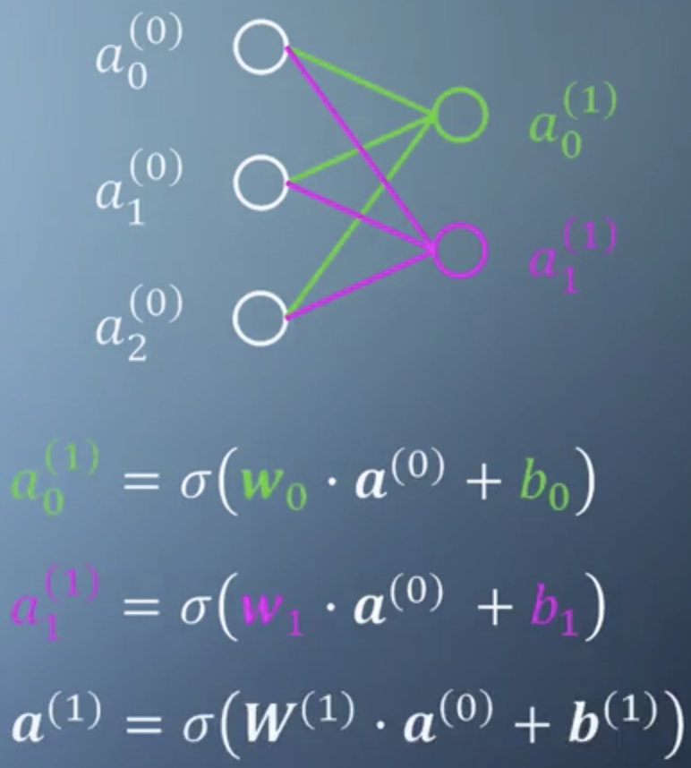
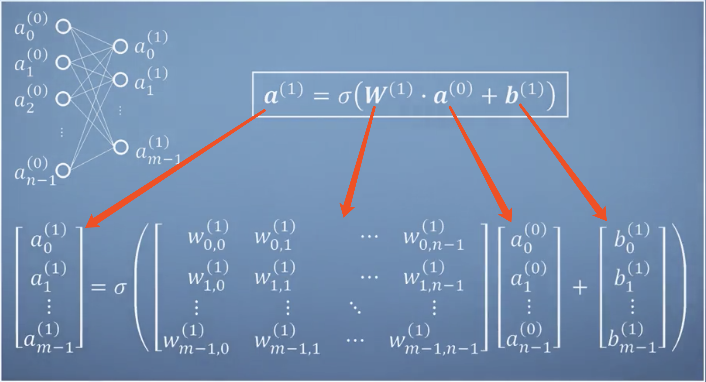
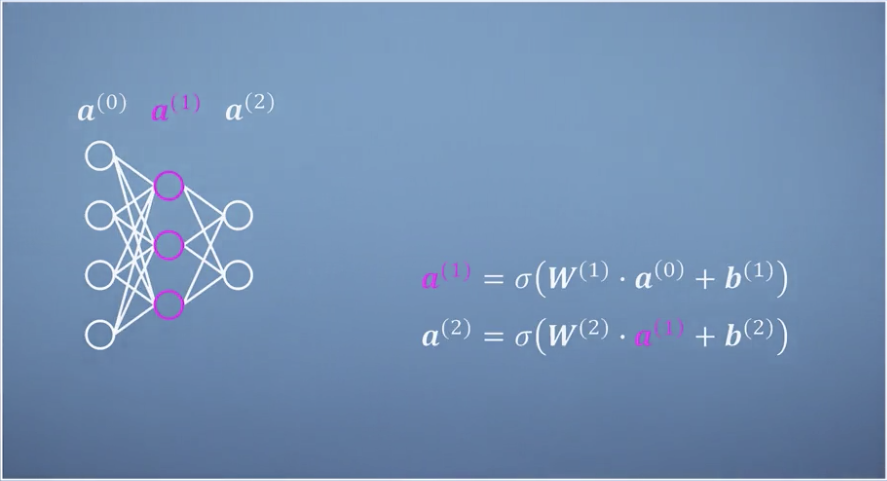
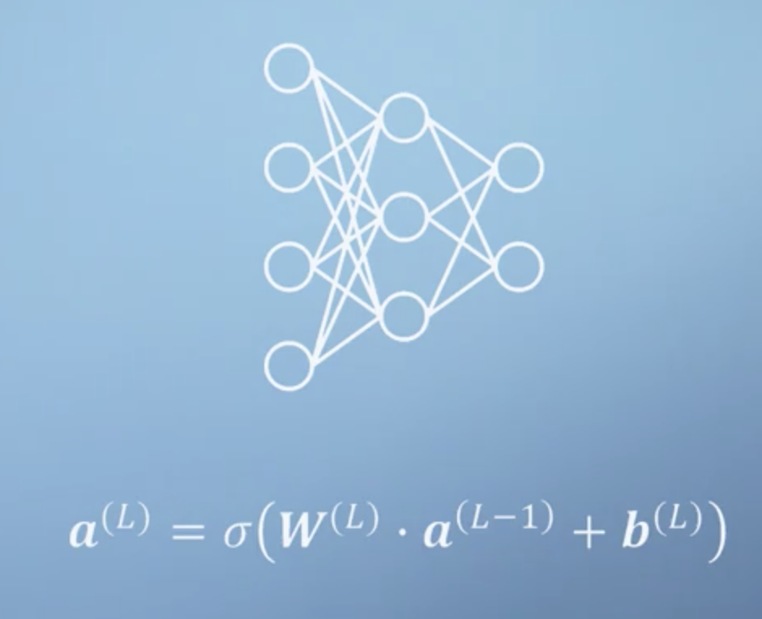
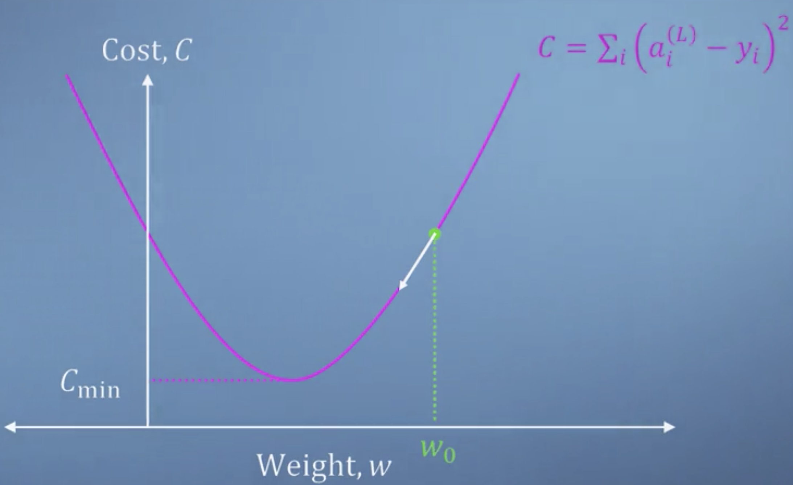
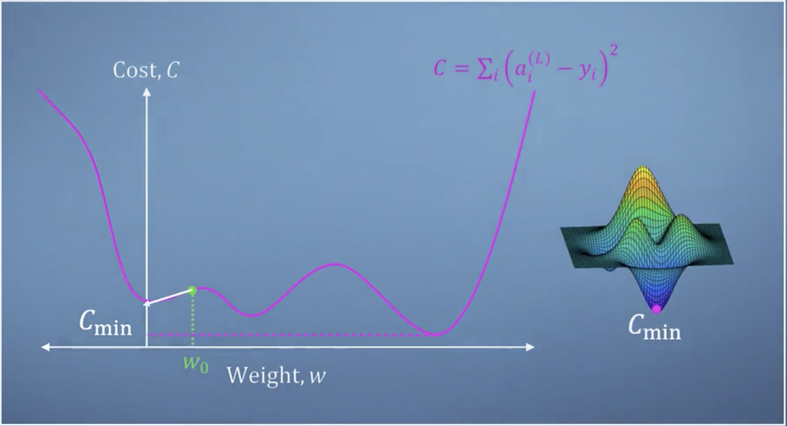
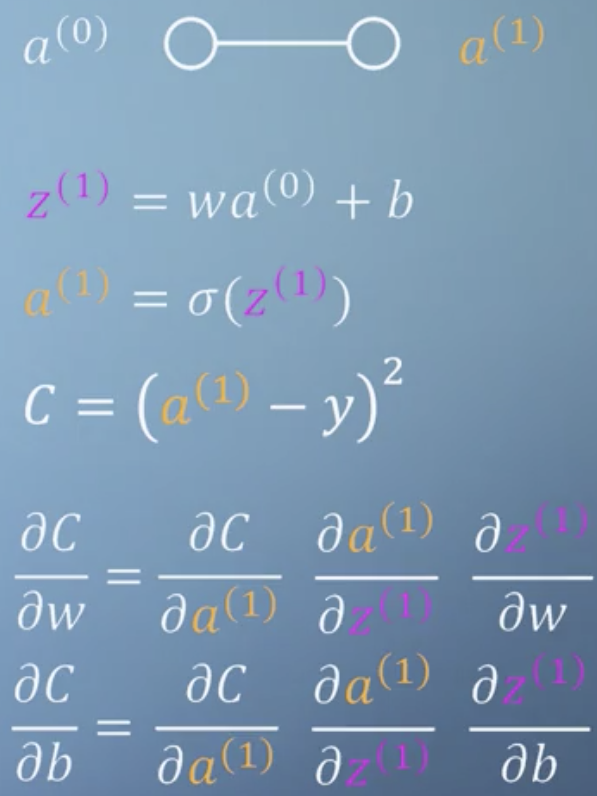
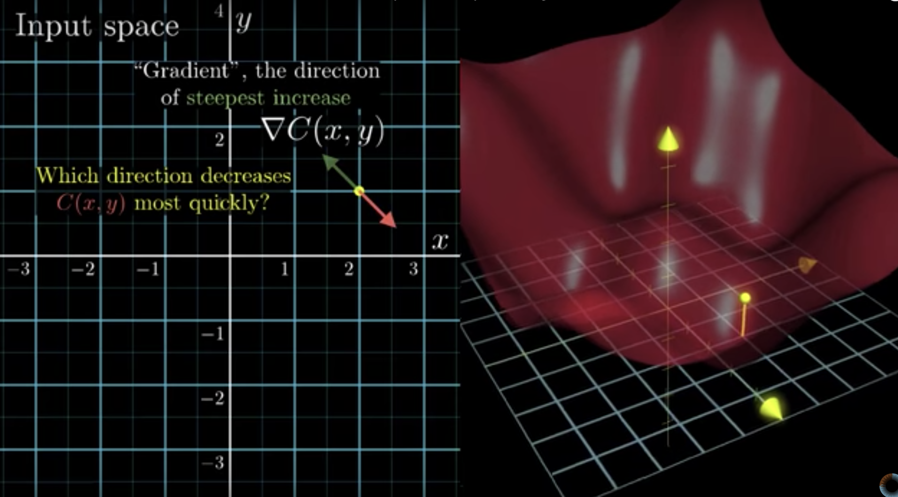
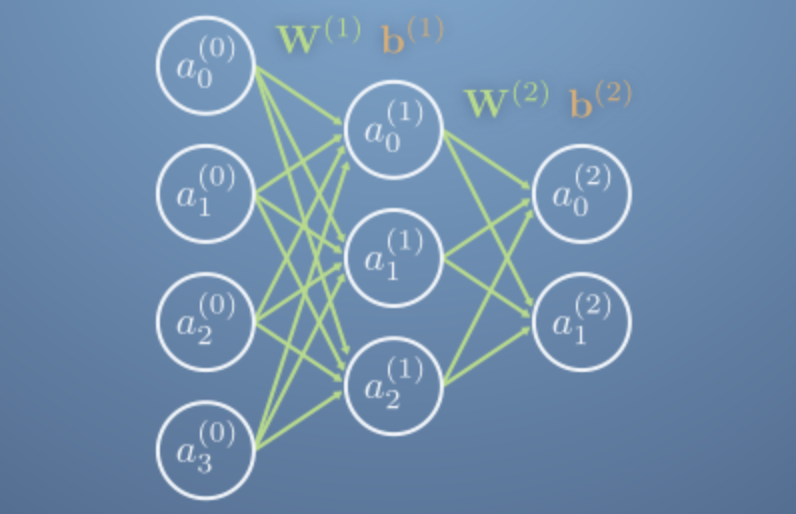

学习目标
- 应用多元链式法则对复合函数求梯度
- 解释神经网络的结构和其代表的函数
- 解释神经网络的结构和其代表的函数
- 编程实现反向传播算法
多元函数链式法则（Chain Rule）
上节课讲过基于 Chain rule 我们可以求出3元复合函数的全导数(参考第二课，《多元函数的导数》)。现在我们将这概念拓展到 n元函数：
存在 n元实值函数 $f(\mathbf{x})=f(x_1,x_2,…,x_n)$，而且每个自变量$x_i(i=1,…,n)$都是另外一个变量 t 的函数，即： $x_i = x_i(t)$. 现在，我们需要计算 $\frac{df}{dt}=$ ?
$$
\text{Gradient }=\frac{\partial f}{\partial \mathbf{x}} = \begin{bmatrix}\frac{\partial f}{\partial x_1}\\ \frac{\partial f}{\partial x_2}\\ \vdots\\ \frac{\partial f}{\partial x_n} \end{bmatrix},
\text{derivatives of each component of } \mathbf{x}\text{ with respect to t is }\frac{d\mathbf{x}}{dt}=
\begin{bmatrix}
\frac{dx_1}{dt} \\
\frac{dx_2}{dt}\\
\vdots \\
\frac{dx_n}{dt}
\end{bmatrix}
$$
回想之前我们采用链式法则求解 total derivatives的方式，我们有：
$$
\begin{align}
\frac{df}{dt} &= \frac{\partial f}{\partial x_1}\frac{dx_1}{dt} + \frac{\partial f}{\partial x_2}\frac{dx_2}{dt} +\cdots +
\frac{\partial f}{\partial x_n} \frac{dx_n}{dt} \\
&= \color{blue}{\frac{\partial f}{\partial \mathbf{x}}} \cdot \color{green}{\frac{d\mathbf{x}}{dt}}(\nabla_{\mathbf{x}}f(\mathbf{x})\cdot\frac{d{\mathbf{x}}}{dt})\\
&= \color{blue}{\mathbf{J}_f(\mathbf{x})} \color{green}{\mathbf{J_x}(t)}
\end{align}
$$
说明：
对于n元实值函数来说，gradient 都是column vector！因此上式中可以使用 “点积”：$\cdot$
对于n元实值函数来说，gradient 是 Jacobian的转置，这毋庸置疑。使用Jacobian的时候，采用的是矩阵乘法来表示计算。
可对于向量值函数来说，“gradient” 是无法定义的，这个时候只能使用Jacobian来解决。因此上式中$\frac{d\mathbf{x}}{dt}$ 其实说的是$\mathbf{J}_{\mathbf{x}}(t)$: 即 Jacobian of $\mathbf{x=x}(t)$, $\mathbf{x}$ 是向量，实际上，
$$
\mathbf{x=x}(t) \Leftrightarrow
\begin{cases}
x_1=x_1(t) \\
x_2=x_2(t)\\
\vdots \\
x_n = x_n(t)
\end{cases}
$$
上面公式中$\frac{d\mathbf{x}}{dt}$ 是处于方便理解的目的而产生的表达式，是不严格的，其语义就是：向量 $\mathbf{x}$ 的每个 component 对 $t$ 求导，然后将结果组成一个列向量；这也就是 Jacobian本身的含义。
More complex-链式法则依然有效
之前我们介绍的Chain Rule 都是针对2层嵌套函数的，实际上链式法则对多层嵌套也是适用的- Chain Rule fit more than two links. e.g. there is 3 links, 3 means multiple.
Example 1:
函数$f(x)=5x$, 而且 $x(u)=1-u$, $u(t) = t^2$.
这个复合函数的links 为：$f\rightarrow x \rightarrow u \rightarrow t$,
- 有3层links（嵌套）
- 且$f,x,u$ 都为实值函数。
此时我们依照之前2层嵌套的思路有如下结果：
$$
\frac{df}{dt}= \frac{d f}{dx}\cdot \frac{dx}{du} \cdot \frac{du}{dt} =5 \times (-1)\times 2t = -10t
$$
Example 2:
存在函数 $f(\mathbf{x}(\mathbf{u}(t)))$, 其中：
- $f(\mathbf{x}) = f(x_1,x_2)$
- $\mathbf{x}(\mathbf{u})=\begin{bmatrix}x_1(\mathbf{u}) \\ x_2(\mathbf{u}) \end{bmatrix}=\begin{bmatrix}x_1(u_1,u_2)\\ x_2(u_1,u_2) \end{bmatrix}$
- $\mathbf{u}(t) = \begin{bmatrix}u_1(t) \\ u_2(t) \end{bmatrix}$
这个函数的特点如下：
- 有3层links
- 函数$f$ 是实值函数: $\mathbf{x},\mathbf{u}$ 是vector valued function-向量值函数
这些特点如下图所示，
$$
f \rightarrow \begin{cases} x_1 \rightarrow \begin{cases}u_1 \rightarrow t \\ u_2 \rightarrow t \end{cases} \\ x_2 \rightarrow \begin{cases}u_1\rightarrow t \\ u_2 \rightarrow t \end{cases} \end{cases} \Leftrightarrow
f \rightarrow \mathbf{x} \rightarrow \mathbf{u} \rightarrow t
$$
解决思路一致：
$$
\frac{df}{dt} =\color{blue} {\frac{\partial f}{\partial \mathbf{x}}} \color{green}{\frac{\partial \mathbf{x}}{\partial \mathbf{u}}} \color{purple}{\frac {d \mathbf{u}}{dt}}=\color{blue}{\begin{bmatrix} \frac{\partial f}{\partial x_1} & \frac{\partial f}{\partial x_2}\end{bmatrix}}
\color{green}{\begin{bmatrix} \frac{\partial x_1}{\partial u_1} & \frac{\partial x_1}{\partial u_2}\\ \frac{\partial x_2}{\partial u_1} & \frac{\partial x_2}{\partial u_2} \end{bmatrix}}
\color{purple}{\begin{bmatrix}\frac{du_1}{dt} \\ \frac{du_2}{dt} \end{bmatrix}}
$$
遗留问题：
- 上式中$\frac{\partial f}{\partial \mathbf{x}}$ 怎么写成行的形式，变成 Jacobian了？
- 如果用Jacobian 为什么要用 gradient 的记号？
- 概念和记号上，时而用gradient时而用 Jacobian,为什么？
原因：
- 用 gradient的记号是因为从视觉角度便于理解整个过程。
- 对于n元函数（无论 实值函数 or 向量值函数），Jacobian 都是兼容 gradient，而且更加通用。
- Jacobian 相比于 gradient 表示更一般的情况- vector valued function。
- 原则上：“如果 gradient 够用就用gradient；如果gradient不够用则用 Jacobian”
从上述分析过程我们可以总结此类问题下链式法则通用计算方法为 ：
$$
\frac{df}{dt} = \color{blue}{\mathbf{J}_f(\mathbf{x})} \color{green}{\mathbf{J_x(u)}} \color{purple}{\mathbf{J_u}(t)}
$$
其中，乘法的意思就是 “矩阵乘法”。
总结：
- 对于使用Chain Rule对嵌套函数求导的时候，只要嵌套的函数中有一个是 vector-valued 的函数，那么使用Jacobian 来描述几乎是唯一的选择，因为此时我们不用考虑乘法是“数乘”，“dot product” or “matrix multiplication”, 此刻都统一为矩阵乘法；否则会陷入各种“乘法不兼容的麻烦”中去。
- 同时也由此可见，Jacobian 确实是比 gradient 更加通用的概念，用来表示计算过程更加方便。
神经网络（Neural Networks）
先介绍一个简单的神经网络
Two Layer NN

如上图所示，这是一个简单的2层神经网络，没有中间层- hidden layer.
- 输入为：向量 $\mathbf{a}^{(0)}=\begin{bmatrix}a_0^{(0)}\\ a_1^{(0)} \\ a_2^{(0)} \end{bmatrix}$.
- 输出为：向量 $\mathbf{a}^{(1)} = \begin{bmatrix} a^{(1)} _0 \\ a^{(1)} _1 \end{bmatrix}$
- Weights: 矩阵 $\mathbf{W^{(1)}}= \begin{bmatrix}\mathbf{w_0}^T\\ \mathbf{w_1}^T \end{bmatrix}\in \mathbb{R^{2\times 3}}$
- Bias: 向量 $\mathbf{b^{(1)}}=\begin{bmatrix} b_0 \\ b_1 \end{bmatrix}$
为了简化起见，我们采用Matrix-vector 的形式描述这个simple neural network:
$$
\mathbf{a^{(1)}} = \sigma (\mathbf{W^{(1)}} \mathbf{a^{(0)}}+ \mathbf{b^{(1)}})
$$
Details of 2-layer NN
上面用简洁的 matrix-vector 的形式介绍了一个简单的2层神经网络,现在补充一些细节。
一个2层的NN，其输入：n scalars 输出：m scalars，见下图，

3 Layers NN-1 hidden layer

Fully Connected Feedforward NN

Training NN
用NN工作的基本流程如下：
设计网络结构，e.g. FCNNs, RNNs, CNNs etc.
初始化参数（weights and biases）
设计 Cost function and Optimization: update all the weights and biases to minimize the Cost function to best match our training data with the ground truth-labels.
- 用 Backpropagation 计算 gradient.
- Gradient descent 更新所有参数($\mathbf{W,b}$) to minimize the Cost function.
- 得到最后最优参数， i.e. 使得 Cost function 取最小值的参数 $(\mathbf{W^,b^})$
这个阶段主要做 Training NN，因此也可以叫做 Training（从人的角度） or Learning（从算法/机器的角度）。
Make Prediction
在新的测试数据上做预测
这个阶段又叫做 Test.
下图可以看出Training NN 的大致过程，


整个Training Process中最为核心的部分就是：
通过Backpropagation（本质就是multivarite chain rule） 计算gradient；然后使用 Gradient descent 来寻找使得 Cost function 最小的参数。
We need to build the Jacobian by gathering together the partial derivatives of the cost function with respect to all of the revelant variables - weights and biases.
结合之前的知识我们简单地对上图做个分析，
- 我们通过迭代更新parameters 来使得 Cost function 的值不断变小，最终达到最小值，此时的 weights 和 biases 就是我们最终想要的。
- 所谓更新parameters，就是指 利用gradient descent算法使Cost function 的gradient不断下降（计算gradient处的那个点 对应的Cost function的值），不断调整 parameters的大小
- gradient 和 参数有什么关系？参数 weights and biases 才是 Cost function的变量，神经网络的输入以及label是常量。因此，gradient is matrices and vectors of partial derivatives of the Cost funtion with resprect to weights and biases.
Example 3：
我们现在以一个最简单的NN为例：一个 input neuron，一个 output neuron.
如图，

简要分析：
Cost function 是 square loss，衡量模型输出 $a^{(1)}$ 与训练数据的真实标签 $y$之间的平方差。我们的目的是最小化这个函数使得：模型的输出与真实的结果越接近越好。
我们有两个 Chain expressions，均有三个links. 通过他们我们可以计算得到 gradient(Jacobian) of Cost function with repsect to weights and biases. 从而使得我们可以使用梯度下降算法来找到使 Cost function取最小值时的参数 $w^,b^$.
- $C = (a^{(1)}-y)^2$ 是针对一个 specific training example而言的，如果有多个examples 应该将它们的损失函数加起来作为整个模型的损失韩式，即：
$$
C = \frac{1}{N} \sum_k^N C_k
$$
其中 $C_k$ 是第$k$ 个training example 的 Cost function；$N$ 是 number of examples in training data; $C$ is the total Cost function of the training data.
Example 4:
当我们增加更多的layers 和neurons的时候，事情会变得稍微复杂一些，见下图：
但是基本的过程依然如同我们training 上面那个最简单的NN一样。
可以参考一个关于 Training neural network的练习题link
关于梯度下降
所谓”Gradient descent” ，可以参考下图：

其包含以下这些方面：
- Cost function 上用以计算 gradient 的点的位置在下降，其实也就是说该点处的函数值在减小。
- 对于n元实值函数来说，其Gradient是一个vector。gradient vector 的长度或者叫范数，是衡量函数在某一点处变化的快慢；gradient 的方向指明了函数值增加/上升最快的方向，那么其反方向就指明了函数值减小/下降 最快的方向。
- gradient 是函数对各个自变量偏导数的向量表示，所以它是自变量空间或者叫parameter space（对神经网络来说）中的一个向量，这个向量的方向即为函数值上升最快的方向。
综上所述，所谓gradient descent的本质含义就是：在与gradient相反的方向上改变自变量的取值，会使得函数值变小。 下面稍做解释：
- 要梯度相反的方向，对gradient 直接取负就好，得到 $-\nabla_{\mathbf{x}}f(\mathbf{x})$.
$$
-\nabla_{\mathbf{x}}f(\mathbf{x}) = \begin{bmatrix}-\frac{\partial f}{\partial x_1} \\ -\frac{\partial f}{\partial x_2}\\
\vdots \\
-\frac{\partial f}{\partial x_n}
\end{bmatrix}
$$
注意：我们根据偏导数的概念知道$\frac{\partial f}{\partial x_i}$ 是指在$x_i$ 这个自变量的方向上，函数值变化的快慢（沿着$x_i$ 轴方向）。那么$-\frac{\partial f}{\partial x_i}$ 就是沿着$-x_i$ 轴方向函数值变化的快慢。
- 根据梯度的定义: 我们知道沿着负梯度函数值减小。函数值的变换本质上是由于自变量取值的变化，我们也知道自变量变化可以表示为：$x\rightarrow x+\Delta x$. 对n元函数来说，是按照如下方式：
$$
\begin{align}
x_1 := x_1 + \Delta x_1\\
x_2 := x_2 + \Delta x_2\\
\vdots \\
x_n := x_n + \Delta x_n
\end{align}
$$
我们只要使得每个 $\Delta x_i$ 的方向是沿着$-x_i$ 轴的方向（即与 $-\frac{\partial f}{\partial x_i}$ 同向），那么我们就可以保证所有自变量都沿着负梯度方向变化，此时：函数值降低。根据上面内容，我们只要保证$\Delta x_i$ 是 -$\frac{\partial f}{\partial x_i}$ 或者是它的正数倍就可以达到我们的目的。换句话说即，
$$
x_1 := x_1 +\alpha(-\frac{\partial f}{\partial x_1})\\
x_2 := x_2 + \alpha(-\frac{\partial f}{\partial x_2})\\
\vdots\\
x_n := x_n + \alpha (-\frac{\partial f}{\partial x_n})\\
\text{Where } \alpha > 0
$$
将上述公式写成向量形式，
$$
\begin{align}
&\color{blue}{\mathbf{x} := \mathbf{x} - \alpha \nabla_\mathbf{x}f(\mathbf{x})}\\
&\text{or another equal expression} \\
&\color{blue}{\mathbf{x} := \mathbf{x} - \alpha \frac{\partial f}{\partial \mathbf{x}}} \\
\end{align}
$$
上式就是我们常见的 gradient descent算法中参数的更新公式。对于神经网络来说，即：
$$
\begin{align}
&\text{For weights}\\
&\color{blue}{\mathbf{W} := \mathbf{W} - \alpha \nabla_\mathbf{W}C(\mathbf{W})} \Leftrightarrow
\color{blue}{\mathbf{W} := \mathbf{W} - \alpha \frac{\partial C}{\partial \mathbf{W}}}\\
&\text{and for biases} \\
&\color{blue}{\mathbf{b} := \mathbf{b} - \alpha \nabla_\mathbf{b}C(\mathbf{b})} \Leftrightarrow\color{blue}{\mathbf{b} := \mathbf{b} - \alpha \frac{\partial C}{\partial \mathbf{b}}} \\
\end{align}
$$
计算梯度$\nabla C$ 的算法就是基于multivariate链式法则的 Backpropagation，它是NN context 下Gradient descent 的核心。
这里有一个很好的关于梯度下降的讲解视频, 值得认真学习、反复钻研 link
Backpropagation
我们现在以包含一个hidden layer 的3层神经网络为例分析backpropagation算法是如何计算梯度的。Example 4:
神经网络如下图

输入：向量 $\mathbf{a}^{(0)}\in \mathbb{R}^4$
隐层：向量 $\mathbf{a}^{(1)}\in \mathbb{R}^3$
输出：向量 $\mathbf{a}^{(2)}\in \mathbb{R}^2$
Layer 1的参数：$\mathbf{W}^{(1)}\in \mathbb{R}^{3\times 4},\mathbf{b}^{(1)}\in \mathbb{R}^3$
Layer 2的参数：$\mathbf{W}^{(2)}\in \mathbb{R}^{2\times 3} ,\mathbf{b}^{(2)}\in \mathbb{R}^2$
For a specific training example, Vector form of Cost function: $C_k = \Vert \mathbf {a}^{(2)} - \mathbf{y} \Vert^2$.
如果我们想计算Cost function对于最后一层(layer 2)的 weights 和 bias的梯度（或者不严谨地叫做偏导数），与之前流程一样：
$$
\begin{align}
\frac{\partial C_k}{\partial \mathbf{W}^{(2)}} &= \frac{\partial C_k}{\partial \mathbf{a}^{(2)}} \frac{\partial \mathbf{a}^{(2)}}{\partial \mathbf{z}^{(2)}} \frac{\partial \mathbf{z}^{(2)}}{\partial \mathbf{W}^{(2)}} \\
\frac{\partial C_k}{\partial \mathbf{b}^{(2)}} &= \frac{\partial C_k}{\partial \mathbf{a}^{(2)}} \frac{\partial \mathbf{a}^{(2)}}{\partial \mathbf{z}^{(2)}} \frac{\partial \mathbf{z}^{(2)}}{\partial \mathbf{b}^{(2)}}
\end{align}
$$
如果我们要计算 Cost function 对于前一层(layer 1) 参数的梯度，我们可以使用下面表达式，
$$
\begin{align}
\frac{\partial C_k}{\partial \mathbf{W}^{(1)}} &= \frac{\partial C_k}{\partial \mathbf{a}^{(2)}} \frac{\partial \mathbf{a}^{(2)}}{\partial \mathbf{a}^{(1)}} \frac{\partial \mathbf{a}^{(1)}}{\partial \mathbf{z}^{(1)}} \frac{\partial \mathbf{z}^{(1)}}{\partial \mathbf{W}^{(1)}} \\
\frac{\partial C_k}{\partial \mathbf{b}^{(2)}} &= \frac{\partial C_k}{\partial \mathbf{a}^{(2)}} \frac{\partial \mathbf{a}^{(2)}}{\partial \mathbf{a}^{(1)}} \frac{\partial \mathbf{a}^{(1)}}{\partial \mathbf{z}^{(1)}} \frac{\partial \mathbf{z}^{(1)}}{\partial \mathbf{b}^{(1)}}
\end{align}
$$
其中 $\frac{\partial \mathbf{a}^{(2)}}{\partial \mathbf{a}^{(1)}}$ 可以被展开为:
$$
\frac{\partial \mathbf{a}^{(2)}}{\partial \mathbf{a}^{(1)}}=\frac{\partial \mathbf{a}^{(2)}}{\partial \mathbf{z}^{(2)}} \frac{\partial \mathbf{z}^{(2)}}{\partial \mathbf{a}^{(1)}}
$$
我们可以将上述过程推广到求损失函数对任何层梯度的情况，
$$
\frac{\partial C_k}{\partial \mathbf{W}^{(i)}} = \frac{\partial C_k}{\partial \mathbf{a}^{(L)}} \color{blue} {\underbrace{\frac{\partial \mathbf{a}^{(L)}}{\partial \mathbf{a}^{(L-1)}} \frac{\partial \mathbf{a}^{(L-1)}}{\partial \mathbf{a}^{(L-2)}} \cdots \frac{\partial \mathbf{a}^{(i+1)}}{\partial \mathbf{a}^{(i)}}}_{\text{from layer L to layer i}} }\frac{\partial \mathbf{a}^{(i)}}{\partial \mathbf{z}^{(i)}} \frac{\partial \mathbf{z}^{(i)}}{\partial \mathbf{W}^{(i)}} \\
\frac{\partial C_k}{\partial \mathbf{b}^{(i)}} = \frac{\partial C_k}{\partial \mathbf{a}^{(L)}} \color{blue}{\underbrace{\frac{\partial \mathbf{a}^{(L)}}{\partial \mathbf{a}^{(L-1)}} \frac{\partial \mathbf{a}^{(L-1)}}{\partial \mathbf{a}^{(L-2)}} \cdots \frac{\partial \mathbf{a}^{(i+1)}}{\partial \mathbf{a}^{(i)}}}_{\text{from layer L to layer i}}} \frac{\partial \mathbf{a}^{(i)}}{\partial \mathbf{z}^{(i)}} \frac{\partial \mathbf{z}^{(i)}}{\partial \mathbf{b}^{(i)}}
$$
其中$\frac{\partial \mathbf{a}^{(j)}}{\partial \mathbf{a}^{(j-1)}}$ 可以被展开为：
$$
\frac{\partial \mathbf{a}^{(j)}}{\partial \mathbf{a}^{(j-1)}} = \frac{\partial \mathbf{a}^{(j)}}{\partial \mathbf{z}^{(j)}} \frac{\partial \mathbf{z}^{(j)}}{\partial \mathbf{a}^{(j-1)}}
$$
以上，就是Backpropagation的全过程。需要注意的几点是：
- 上面公式中我们都用了偏导数的符号$\frac{\partial}{\partial}$, 但根据本节课之前的内容我们应该明白这些偏导数符号表达的是 Jacobian。
- 乘法应该是matrix multiplication
因为只有基于上述两点，以上整个过程涉及的公式才能将：
- $f:\mathbb{R}^n \rightarrow \mathbb{R}$, i.e. $\nabla_\mathbf{x}f(\mathbf{x})=(\mathbf{J}_f(\mathbf{x}))^T \in \mathbb{R}^{n\times 1} $
- $f:\mathbb{R}^{m\times n} \rightarrow \mathbb{R}$, i.e. $\nabla_{\mathbf{x}}f(\mathbf{x}) \in \mathbb{R}^{m\times n}$
- $f:\mathbb{R}^n \rightarrow \mathbb{R}^m$,i.e. $\mathbf{J_f(x)} \in \mathbb{R}^{m\times n}$
- $f:\mathbb{R} \rightarrow \mathbb{R}^m$,i.e. $\mathbf{J_f}(x) \in \mathbb{R}^{m\times 1}$
这四种函数值与自变量的组合情况统一在一组公式之下，因为：Jacobian 完全兼容 gradient，更加具有通用性；缺点就是Jacobian不如gradient的表示式那么直观。
动手练习
这是一个练习 Backpropagation的notebook-link.
Learning by doing!
Learning by teaching!